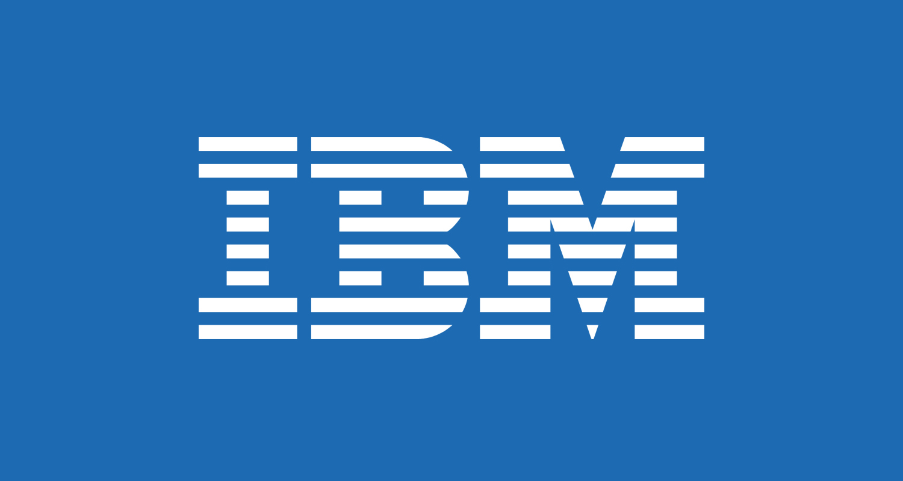
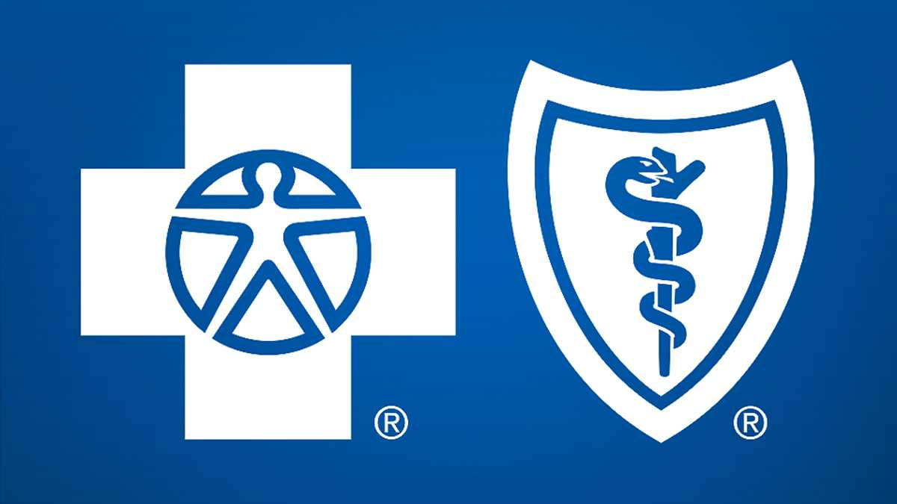
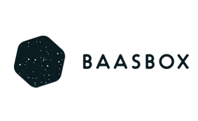
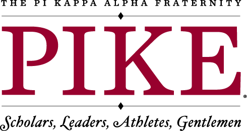

Work Experience
Notable Achievements
Bachelor of Science in Information Analysis, April 2018
• Notable Courses: UC 270 (Business Creativity and Leadership), SI 206 and SI 330 (Data Manipulation Programming), SI 370 (Data Exploration Programming), SI 485 (Data Analytics Capstone)
• Minors: Ross School of Business | Entrepreneurship
• GPA: 3.60/4.00
• Proficiencies: Python, SAS, Excel, VBA, SQL, R-Studio, Adobe Creative Suite, HTML5, CSS
• Activities: Ross Sales Club, Ross Marketing Club, Pi Kappa Alpha Fraternity
Companie's Worked With
- IBM | Business Analytics Consultant | Philadelphia, PA
- Blue Cross Blue Shield | Data Analyst | Detroit, MI
- BaasBox | Finance and Administrative Operations | Rome, Italy
- COSA (Collective Organization of Student Artists) | Co-Founder | Ann Arbor, MI
- PI Kappa Alpha | Philanthropic Chair | Ann Arbor, MI
- City of Grosse Pointe | Head Lifeguard | Grosse Pointe, MI
Work Descriptions
IBM

- Begin full-time role upon graduation
Blue Cross Blue Shield

- Optimized insurance plan and lifecycle revenue by creating models to analyze and forecast pricing, units sold, and retention ratios
- Automated monthly reports, which improved completion time from two weeks to 10 minutes
- Performed deep dives into sub-segments of membership by region to provide financial insights to leadership
BaasBox

- Utilized search engine optimization tactics through Google Analytics by analyzing trends on pageviews, click through rate, cost per click, view time, and keyword analysis
- Gained international business skills by supporting European partners with product pricing and identifying new target markets to generate revenue
- Created a technical product presentation used in conferences to show benefits of their
platform and presented to potential investors, helped gain additional investments of $50,000
COSA (COLLECTIVE ORGANIZATION FOR STUDENT ARTISTS)

- Admitted to DTX Launch Detroit and TechArb both intensive accelerator programs for startups
- Performed customer discovery on 300+ Student/Professional Artists, developing a business model around marketing and time management solutions
- Raised $10k in grant money and personally retained $3k in revenue
PI Kappa Alpha

- Secured multiple local and national sponsorships, as well as media coverage in order to raise $40,000 for the Autism Alliance of Michigan and $60,000 for U of M Comprehensive Cancer Center